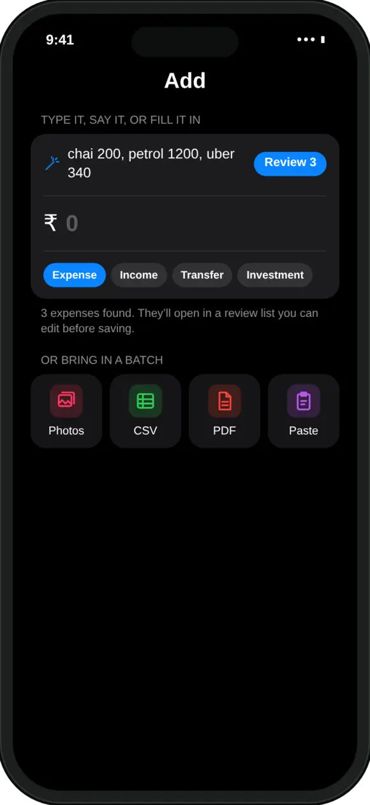

Why log expenses by voice?
Because saying a spend takes a few seconds, and saying five takes barely longer. Fewer taps means you are more likely to keep it up.
Most people stop tracking because it feels like work, not because they stop caring. A UPI payment takes one tap, but writing it down takes several. Voice closes that gap: you can log the day's spends while walking out of the shop, or all at once before bed.
The trick is saying several at a time. Instead of opening the app after every payment, you say “200 chai, 450 groceries at BigBasket and 1200 petrol” once and get three entries.
How do I log several expenses by voice in MoneyOS?
Open Add, tap the mic, say your spends, tap Done, then check the entries and save. Five steps:
- Open Add. Tap the add button to open the Add screen.
- Tap the mic. Tap the mic in the line that says Type it, say it, or fill it in. The Speak your expenses sheet opens.
- Say your spends. Say them in one go, for example 200 chai, 450 groceries at BigBasket and 1200 petrol. The words appear as you talk.
- Tap Done. Tap Done, or simply stop talking. It stops listening on its own after a short silence.
- Review and save. One expense fills the form. Several open straight in a review list where you check each one before saving.
You can also start straight from Siri by saying “Voice add in MoneyOS”, “Dictate an expense in MoneyOS” or “Speak an expense to MoneyOS”. The Add expense control in Control Center opens the same sheet. The first time, iOS asks for Microphone and Speech Recognition access.
What should I say so MoneyOS understands?
Say the amount and what it was for, and separate each spend with a comma, “and”, “then” or “aur”.
- Amounts in any common form. “₹99”, “rs 300”, “300 rupees”, “1,200” and “99.50” all work.
- Hinglish is fine. “500 ki groceries aur 200 ka petrol” becomes two entries.
- Money in, not just out. “Received 2000 from Ramesh” and “got 50000 salary” are logged as income. “Transferred 5000 to my savings” is a transfer, while “paid 1000 electricity” stays an expense.
- Merchants pick the category. Petrol goes to Fuel, Uber to Travel and BigBasket to Groceries.
- No amount, no entry. “Umm ok, 300 uber” gives one entry for 300. A part with no number is skipped, never guessed.

How do I check what MoneyOS heard?
Several spends open in a review list. You can fix any row, untick it, and only then save.
- One spend fills the form. Say a single expense and the amount and details are filled in for you to save.
- Several open a list. Each spend is a row with its amount, category and type. Change anything that is wrong.
- Likely repeats are unticked. If you already logged a payment, the matching row is left unticked so you do not count it twice.
Logged spends count towards your limits straight away. If you have set a limit for food or fuel, see how category budgets and the 80% and 100% alerts work. For a month of UPI payments at once, import your Google Pay and PhonePe screenshots instead.

Is my voice sent anywhere?
Not to MoneyOS. The app asks iOS to transcribe on the iPhone itself whenever the phone supports it, and turns the words into entries on the phone.
On an iPhone that cannot transcribe on the device, iOS uses Apple's own speech recognition, the same as the keyboard mic. MoneyOS has no servers and no account, so your voice and your spends never reach us. Speech recognition listens in your iPhone's language and falls back to Indian English if that language is not available. Microphone access is asked for only when you first use voice, and you can turn it off any time in Settings. Read more in our privacy policy, or see our introduction to MoneyOS for every other way to log money.
Frequently asked questions
Can I add expenses by voice on iPhone?
Yes. In MoneyOS, open Add and tap the mic next to the line that says Type it, say it, or fill it in. Say your spends, tap Done, and they open as entries for you to check before saving.
Can I say more than one expense at a time?
Yes. Separate them with a comma, and, then or aur, for example 200 chai, 450 groceries at BigBasket and 1200 petrol. Each amount becomes its own entry in a review list.
Does voice entry work in Hinglish?
It understands common Hinglish phrasing such as 500 ki groceries aur 200 ka petrol, which becomes two entries. Speech recognition uses your iPhone's language and falls back to Indian English if that is not available.
Is my voice sent to a server?
MoneyOS asks iOS to transcribe on the iPhone itself whenever the phone supports it, and turning the words into entries also happens on the phone. On iPhones that cannot transcribe on the device, iOS uses Apple's speech recognition, as the keyboard mic does. MoneyOS has no servers and nothing reaches us.
What if it gets an amount or category wrong?
Nothing is saved until you check it. In the review list you can change the amount, category or type, or untick a row. An entry is only created when you actually said an amount.
Is MoneyOS free?
Yes. The whole app is free, with no subscription, no ads and no in-app purchases. There is no account and no bank login.